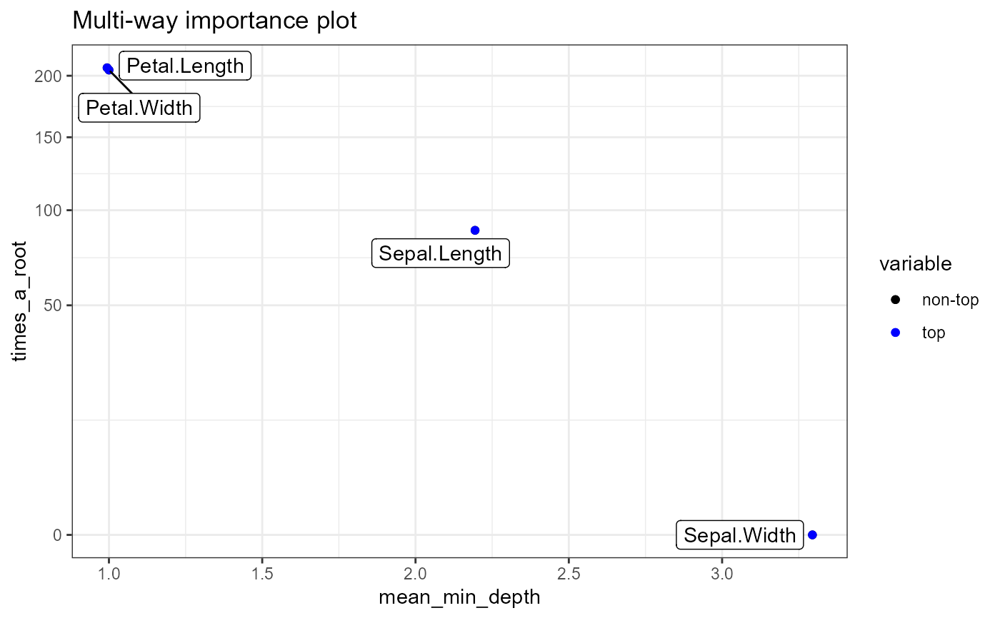

Plot two or three measures of importance of variables in a random fores. Choose importance measures from the colnames(importance_frame).
plot_multi_way_importance( importance_frame, x_measure = "mean_min_depth", y_measure = "times_a_root", size_measure = NULL, min_no_of_trees = 0, no_of_labels = 10, main = "Multi-way importance plot" )
| importance_frame | A result of using the function measure_importance() to a random forest or a randomForest object |
|---|---|
| x_measure | The measure of importance to be shown on the X axis |
| y_measure | The measure of importance to be shown on the Y axis |
| size_measure | The measure of importance to be shown as size of points (optional) |
| min_no_of_trees | The minimal number of trees in which a variable has to be used for splitting to be used for plotting |
| no_of_labels | The approximate number of best variables (according to all measures plotted) to be labeled (more will be labeled in case of ties) |
| main | A string to be used as title of the plot |
A ggplot object
forest <- randomForest::randomForest(Species ~ ., data = iris, localImp = TRUE) plot_multi_way_importance(measure_importance(forest))